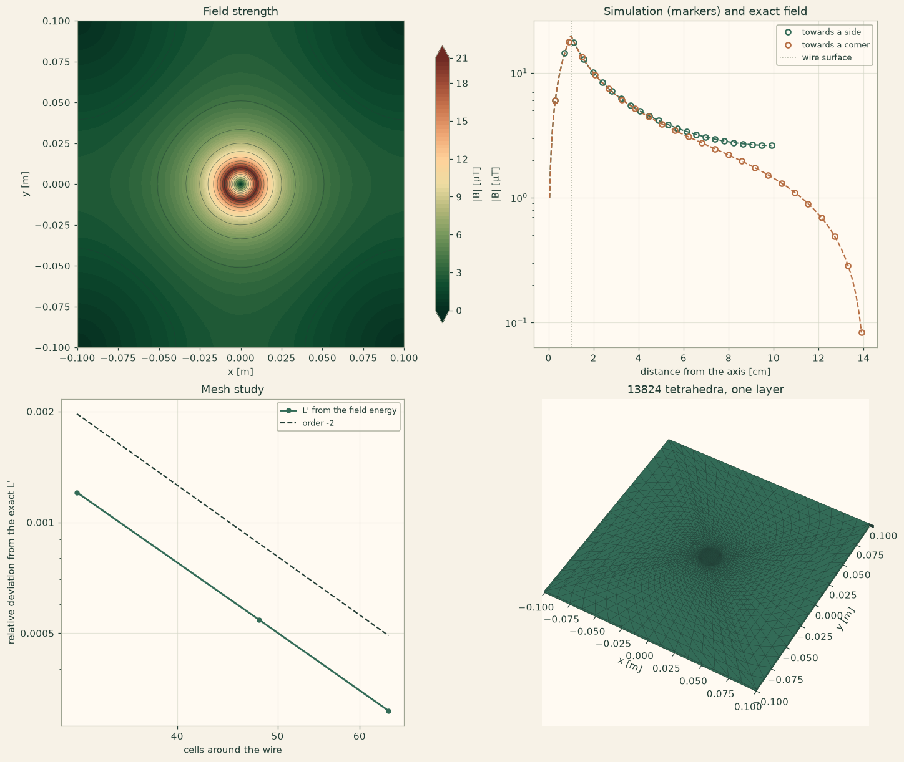
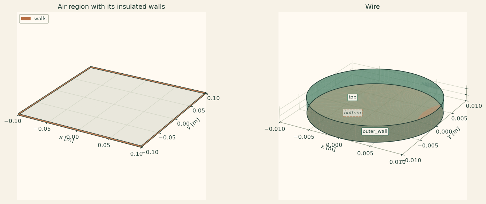

Docs › Examples › Magnetic field of a straight wire in a square domain
Magnetostatics · 2D
Magnetic field of a straight wire in a square domain
A long current-carrying wire inside a square region with magnetic insulation, where the boundary visibly bends the field away from the circular textbook law.

What it computes
The air region and the wire are read from two STEP files. OneSimulation solves the magnetic vector potential with second-order Nedelec edge elements and a Coulomb gauge on a graded cross-section extruded one layer thick, and compares the inductance with the exact conformal-map solution for the square. The script that builds the STEP files comes with the notebook.
What it checks
The inductance per length deviates from the exact value by 0.12 %, 0.05 % and 0.03 % on three meshes.
Geometry
The notebook starts at the import of the CAD files wire_field_square_domain.step, wire_field_square_domain_wire.step: STEP (AP242), readable by any CAD program, with the names of the faces that the boundary conditions use. Put them next to the notebook.

The geometry script
The script wire_field_square_domain_geometry.py builds the geometry with the CAD objects of OneSimulation and writes the files. Change a dimension there, run it, and run the notebook again.
"""Geometry of the OneSimulation example "Magnetic field of a long wire in a square air domain".
Builds a 2.5 mm slab of the cross-section with the CAD objects of OneSimulation: the square air
region of side 20 cm around the axis, written to wire_field_square_domain.step, and the round wire
of radius 1 cm, written to wire_field_square_domain_wire.step. The four walls of the air region
form the group walls.
"""
from onesim.cad.d3 import Box, Cylinder
side, wire_radius, thickness = 0.20, 0.01, 0.0025
air = Box(length=side, width=side, height=thickness, origin=(-side / 2, -side / 2, 0.0))
faces = air.boundaries
air = air.grouped(walls=faces.x_min | faces.x_max | faces.y_min | faces.y_max)
air.save("wire_field_square_domain.step")
Cylinder(radius=wire_radius, length=thickness).save("wire_field_square_domain_wire.step")The notebook
The complete notebook, cell by cell. Run it to produce the figures and the comparison printout.
A round conductor of radius \(a=1\) cm carries \(I=1\) A uniformly over its cross-section. It runs through the centre of a square air region of side \(s=20\) cm with magnetic insulation, \(\mathbf n\times\mathbf A=0\), on its walls. Near the wire the field is the familiar circular field; towards the walls it is pushed into the shape of the square, stronger towards the side midpoints and weaker towards the corners.
The model solves \(\nabla\times(\mu_0^{-1}\nabla\times\mathbf A)=\mathbf J\) with second-order Nédélec edge elements and a Coulomb gauge, on a slab of the cross-section that is one layer of tetrahedra thick.
The slab comes from two CAD files: wire_field_square_domain.step holds the air region with the face group walls, wire_field_square_domain_wire.step the wire. The script wire_field_square_domain_geometry.py builds both with the CAD objects of OneSimulation.
Reference. The Schwarz-Christoffel map \(z(w)=R_c\,w\,{}_2F_1(\tfrac14,\tfrac12;\tfrac54;-w^4)\) takes the unit disc onto the square; \(R_c=0.53935\,s\) is the conformal radius. Outside the wire the vector potential is \(A_z=-\frac{\mu_0I}{2\pi}\ln|w|\), and the inductance per unit length is exactly
import numpy as np
from scipy.special import hyp2f1
from onesim.cad.d2 import Plane
from onesim.cad.exchange import load
from onesim.materials import VacuumPermeability
from onesim.meshing import Geometric, disc_blocks, extrude, merge_blocks, o_grid
from onesim.numerics import Numerics
from onesim.numerics.fem import FiniteElement, Nedelec
from onesim.numerics.linear import SparseDirect
from onesim.physics.magnetostatics import CoulombGauge, MagneticInsulation, MagneticVectorPotential, Magnetostatics, RegionCurrent
from onesim.results.integration import mean_value, measure
from onesim.simulation import Problem, Simulation
from onesim.visualization import theme, plots
theme.set()Geometry
air, wire = load("wire_field_square_domain.step"), load("wire_field_square_domain_wire.step")
faces = air.boundaries
side, thickness, wire_radius, current = air.size[0], air.size[2], wire.size[0] / 2, 1.0
fig = plots.figure(1, 2, size=(13, 5))
plots.geometry(air, selection={"walls": faces.walls}, labels=False, title="Air region with its insulated walls", ax=fig[0])
plots.geometry(wire, labels=False, title="Wire", ax=fig[1])
plots.show()Reference
mu0 = float(VacuumPermeability().evaluate())
conformal_radius = 0.53935 * side
exact_inductance = mu0 / (2 * np.pi) * (0.25 + np.log(conformal_radius / wire_radius))
def exact_field(x, y):
"""|B| from the conformal map of the disc onto the square (linear law inside the wire)."""
z = (x + 1j * y) / conformal_radius
w = z.copy()
for _ in range(60):
w = w - (w * hyp2f1(0.25, 0.5, 1.25, -w**4) - z) * np.sqrt(1 + w**4)
outside = mu0 * current / (2 * np.pi * conformal_radius) * np.abs(np.sqrt(1 + w**4) / w)
return np.where(np.hypot(x, y) < wire_radius, mu0 * current * np.hypot(x, y) / (2 * np.pi * wire_radius**2), outside)Mesh and model
disc_blocks meshes the wire, o_grid the air between the wire and the square walls with cells that grow with the distance from the wire. The quadrilaterals are split into triangles and extruded into one layer of tetrahedra; geometry=air binds the mesh to the faces of the air region. The wire carries a uniform axial current density.
def solve(n):
"""Magnetic flux density on the mesh with n cells per quarter of the wire circumference."""
blocks = disc_blocks((0, 0), (wire_radius,), n, n // 2) + o_grid(
(0, 0), wire_radius, side / 2, n, 3 * n // 2, radial_grading=Geometric(3 * n // 2, ratio=10.0),
inner_name=None, outer_names=("walls",) * 4)
mesh = extrude(merge_blocks(blocks).triangulated(), thickness, 1, geometry=air)
source = RegionCurrent.axial(wire, current, area=2 * n * wire_radius**2 * np.sin(np.pi / (2 * n)), within=air.volume)
model = Magnetostatics(domain=air.volume, permeability=VacuumPermeability(),
formulation=MagneticVectorPotential(gauge=CoulombGauge()), current_sources=(source,))
problem = Problem(name="Wire in an insulated square", geometry=air, physics=(model,), boundary_conditions=(
MagneticInsulation(boundary=faces.all, physics=model),))
numerics = Numerics(spatial=FiniteElement(element=Nedelec(order=2)), linear_solver=SparseDirect())
field = Simulation(problem=problem, mesh=mesh, numerics=numerics).solve_stationary().field(model.magnetic_flux_density)
return field, mesh
runs = {4 * n: solve(n) for n in (8, 12, 16)}
field, mesh = runs[64]Results
The inductance per unit length follows from the field energy, \(L'=2W'/I^2\) with \(W'=\int B^2/(2\mu_0)\,\mathrm dA\).
squared = lambda B, position: (B**2).sum(axis=1)
inductance = {cells: mean_value(B, component=squared) * measure(B) / (mu0 * current**2 * thickness) for cells, (B, _) in runs.items()}
print("cells around the wire tetrahedra L' [nH/m] deviation from the exact value")
for cells, value in inductance.items():
print(f"{cells:21d} {runs[cells][1].cell_count:12d} {1e9 * value:11.3f} {100 * (value / exact_inductance - 1):+.4f} %")
print(f"{'exact':>21s} {'':12s} {1e9 * exact_inductance:11.3f}")Figure
The field strength over the cross-section, the field along a line towards a side midpoint and towards a corner against the exact solution, the mesh study of the inductance and the finest mesh.
strength = lambda B, position: 1e6 * np.hypot(B[:, 0], B[:, 1])
lines = {"towards a side": (1.0, 0.0, 0.099), "towards a corner": (2**-0.5, 2**-0.5, 0.139)}
computed, exact = {}, {}
for label, (dx, dy, reach) in lines.items():
coarse, fine = np.linspace(0.003, reach, 24), np.linspace(0.0005, reach, 300)
points = np.column_stack((dx * coarse, dy * coarse, np.full_like(coarse, thickness / 2)))
computed[label] = (100 * coarse, strength(field.evaluate(points), points))
exact[label] = (100 * fine, 1e6 * exact_field(dx * fine, dy * fine))
fig = plots.figure(2, 2, size=(13, 11))
plots.mesh(mesh, groups=("all",), legend=False, camera=plots.Camera(elevation=50, azimuth=-60),
title=f"{mesh.cell_count} tetrahedra, one layer", ax=fig[3])
plots.section(field, plane=Plane(origin=(0, 0, thickness / 2), normal=(0, 0, 1)), component=strength, limits=(0, 20),
contours=10, subdivisions=3, label="|B| [µT]", title="Field strength", ax=fig[0])
plots.line(points=computed, reference=exact, vlines={"wire surface": 1.0}, scale="logy", xlabel="distance from the axis [cm]",
ylabel="|B| [µT]", title="Simulation (markers) and exact field", ax=fig[1])
plots.convergence(list(inductance), {"L' from the field energy": [abs(value / exact_inductance - 1) for value in inductance.values()]},
order=-2, xlabel="cells around the wire", ylabel="relative deviation from the exact L'",
title="Mesh study", ax=fig[2])
plots.show()Going further
Shrink the square in wire_field_square_domain_geometry.py and write the STEP files again to see how tight magnetic insulation deforms the field and lowers the inductance, move the wire off centre, or give it a permeability \(\mu_r\neq1\).